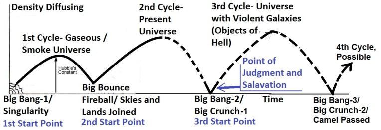
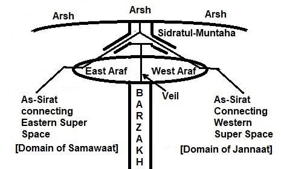

―But for the cowardly and unbelieving and abominable and murderers and immoral persons and sorcerers and idolaters and all liars, their part will be in the lake that burns with fire and brimstone, which is the second death.‖ [Revelation 21:8, Holy Bible]
"কিন্তু কাপুরুষ ও অবিশ্বাসী এবং জঘন্য এবং হত্যাকারী এবং অনৈতিক ব্যক্তি এবং যাদুকর এবং মূর্তিপূজক এবং সমস্ত মিথ্যাবাদীদের জন্য, তাদের অংশ হ্রদে থাকবে যা আগুন এবং গন্ধক দিয়ে জ্বলছে, যা দ্বিতীয় মৃত্যু।" [প্রকাশিত বাক্য 21:8, পবিত্র বাইবেল]
―He who has an ear, let him hear what the Spirit says to the churches. He who overcomes will not be hurt by the second death.‖ [Revelation 2:11, Holy Bible]
-যার কান আছে সে শুনুক আত্মা মন্ডলীকে কি বলে। যে পরাজিত হয় সে দ্বিতীয় মৃত্যু দ্বারা ক্ষতিগ্রস্থ হবে না।'' [প্রকাশিত বাক্য 2:11, পবিত্র বাইবেল]
The fire of hell may be so intense that sinners will experience a state of death referred to as the Second Death in the above verses. This implies that the second death and resurrection are distinct from the first death and resurrection. According to the Hadith, a time will come when those with even the slightest faith in one God will be rescued from the fire. At that point, ‗Death‘ will be slaughtered in the Barzakh, which separates Jannaat from the Samawaat (this universe). Afterward, the process of salvation will come to an end. Idolaters will never die and will remain in hell forever. This is stated in the following verse of the Holy Bible:
নরকের আগুন এতটাই তীব্র হতে পারে যে পাপীরা এমন একটি মৃত্যুর অবস্থা অনুভব করবে যাকে উপরের আয়াতগুলিতে দ্বিতীয় মৃত্যু হিসাবে উল্লেখ করা হয়েছে। এর অর্থ হল দ্বিতীয় মৃত্যু এবং পুনরুত্থান প্রথম মৃত্যু এবং পুনরুত্থান থেকে আলাদা। হাদিস অনুসারে, এমন এক সময় আসবে যখন এক আল্লাহর প্রতি সামান্যতম বিশ্বাসও থাকবে তাদের আগুন থেকে উদ্ধার করা হবে। সেই মুহুর্তে, 'মৃত্যু' বরযাখে জবাই করা হবে, যা জান্নাতকে সামাওয়াত (এই মহাবিশ্ব) থেকে পৃথক করে। পরে, পরিত্রাণের প্রক্রিয়া শেষ হবে। মুশরিকরা কখনো মরবে না এবং চিরকাল জাহান্নামে থাকবে। এটি পবিত্র বাইবেলের নিম্নোক্ত আয়াতে বলা হয়েছে:
―The rest of the humanity, all those who had not been killed by these plagues, did not turn away from what they themselves had made. They did not stop worshipping demons, nor the idols of gold, silver, bronze, stones, and wood, which cannot see, hear, or walk. Nor did they repent of their murders, their magic, their sexual immorality, or their stealing‖ [Revelation 9 (20–21), Holy Bible]
- বাকি মানবতা, যারা এই মহামারী দ্বারা নিহত হয়নি, তারা নিজেরাই যা তৈরি করেছিল তা থেকে মুখ ফিরিয়ে নেয়নি। তারা রাক্ষসদের পূজা করা বন্ধ করেনি, না সোনা, রূপা, ব্রোঞ্জ, পাথর এবং কাঠের মূর্তি, যা দেখতে, শুনতে বা হাঁটতে পারে না। অথবা তারা তাদের হত্যা, তাদের জাদু, তাদের যৌন অনৈতিকতা বা তাদের চুরির জন্য অনুতপ্ত হয়নি” [প্রকাশিত বাক্য 9 (20-21), পবিত্র বাইবেল]
3. Salvation by Transporters, like Burak and Raf Raf
3. পরিবহনকারীদের দ্বারা পরিত্রাণ, যেমন বুরাক এবং রাফ রাফ
A Muslim religious scholar would likely disagree with the concept of salvation through the Second Death, as it is not explicitly and clearly discussed in the Hadith. Salvation through the Second Death primarily applies to Christians. Muslim sinners will have a different path to salvation from hell. This may be why the Prophet (pbuh) did not specifically address salvation through the Second Death. A time will come when Prophet Muhammad (pbuh) will remember his sinful followers in hell. He will seek permission from Allah to rescue them. He has the means and ability to traverse the skies (Samawaat/this universe), as demonstrated during the Night Journey (Miraj). He will personally carry out the rescue using this ability. 4. Salvation through Black Hole
একজন মুসলিম ধর্মীয় পণ্ডিত সম্ভবত দ্বিতীয় মৃত্যুর মাধ্যমে পরিত্রাণের ধারণার সাথে একমত হবেন না, কারণ এটি হাদিসে স্পষ্টভাবে এবং স্পষ্টভাবে আলোচনা করা হয়নি। দ্বিতীয় মৃত্যুর মাধ্যমে পরিত্রাণ প্রাথমিকভাবে খ্রিস্টানদের জন্য প্রযোজ্য। মুসলিম পাপীদের জাহান্নাম থেকে পরিত্রাণের জন্য আলাদা পথ থাকবে। এ কারণেই হয়তো নবী (সা.) দ্বিতীয় মৃত্যুর মাধ্যমে পরিত্রাণের কথা বিশেষভাবে বলেননি। এমন এক সময় আসবে যখন নবী মুহাম্মদ (সাঃ) তার পাপী অনুসারীদের জাহান্নামে স্মরণ করবেন। তিনি তাদের উদ্ধারের জন্য আল্লাহর কাছে অনুমতি চাইবেন। রাতের যাত্রায় (মিরাজ) যেভাবে দেখা গেছে আকাশ (সামাওয়াত/এই মহাবিশ্ব) অতিক্রম করার উপায় ও ক্ষমতা তার রয়েছে। তিনি ব্যক্তিগতভাবে এই ক্ষমতা ব্যবহার করে উদ্ধার কাজ চালাবেন। 4. ব্ল্যাক হোলের মাধ্যমে পরিত্রাণ
Idolaters will remain in hell for as long as the ‗Skies and Lands‘ (the Universe) endure, as stated in the following verse:
যতদিন 'আকাশ ও ভূমি' (মহাবিশ্ব) থাকবে ততদিন মুশরিকরা জাহান্নামে থাকবে, যেমনটি নিম্নলিখিত আয়াতে বলা হয়েছে:
―They will dwell therein for all the time that the Skies and Lands endure, except as thy Lord willeth; for thy Lord is the accomplisher of what He planneth.‖ [Al Quran 11:107]
- তোমার প্রভুর ইচ্ছা ব্যতীত, আকাশ ও ভূমি যতক্ষণ স্থায়ী হবে ততক্ষণ তারা সেখানে বাস করবে। কেননা আপনার পালনকর্তা যা পরিকল্পনা করেন তা সম্পন্নকারী।'' [আল কুরআন 11:107]
The gates of the Skies, through which one can exit this universe, will not be opened for them, as the verses under discussion state: ―To those who reject Our signs and treat them with arrogance, no opening will there be of the gates of Skies, nor will they enter the Jannaat until the camel can pass through the eye of the needle.‖ Thus, they cannot enter Jannaat through As-Sirat. However, there might be a different path. This alternative path is hinted at in the verses under discussion by the metaphor: ―…until the camel can pass through the eye of the needle.‖ It seems to suggest a process akin to a galaxy passing through its central super-massive black hole. All galaxies contain super-massive black holes at their centers, which gradually consume matter from their surroundings. Over billions of years, these black holes may eventually devour all the matter within their galaxy. When this process is complete, the inhabitants of that galaxy might be transferred to Jannaat through an alternate path. Stephen Hawking flourished an idea of going out of this universe through a black hole: ―As a black hole gives off particles and radiation, it will lose mass. This will cause the black hole to get smaller and to send out particles more rapidly. Eventually, it will get down to zero mass and will disappear completely. What will happen then to the objects, including possible space ships that have fallen into the black hole? According to some recent work of mine, the answer is that they will go off into a little baby universe of their own. A small self-contained universe branches off from our region of the universe. This baby universe may join on again to our region of space-time. If it does, it would appear to us to be another black hole that and then evaporated. Particles that fell into one black hole would appear as particles by the other black hole, and vice versa. This sounds like just what is required to allow space travel through black holes. You just steer your space ship into a suitable black hole. It had better be a pretty big one, though or the gravitational forces will tear you into spaghetti before you get inside. You would then hope to reappear out of some other hole, though you wouldn‘t be able to choose where. However, there‘s a snag in this intergalactic transportation scheme. The baby universes that take the particle that fell into the hole occur in what is called imaginary time. In real time, an astronaut who fell into a black hole would come to a sticky end. He would be torn apart by the difference between the gravitational force on his head and his feet. Even the particles that made up his body would not survive. Their histories, in real time, would come to an end at a singularity. But the histories of the particles in imaginary time would continue. They would pass into the baby universe and would re-emerge as the particles emitted by another black hole. Thus, in a sense, the astronaut would be transported to another region of the universe. However, the particles that emerged would not look much like the astronaut. Nor might it be much consolation to him, as he ran into the singularity in real time, to know that his particles will survive in imaginary time. The motto for anyone who falls into a black hole must be: ‗Think imaginary‘ –Black holes and Baby Universes by Stephen Hawking. In the afterlife, the soul (nafs) of a human will be fully matured. On the Day of Judgment, when the soul becomes intertwined with a set of Double Helix DNA Molecules, it will form its physical body by absorbing nourishment from the surroundings—no mother's womb will be needed at that time. If the soul is so powerful, the body can never be destroyed. Only the skin of a person will burn in the immense fire, and it will continuously repair itself.
আকাশের দরজা, যার মাধ্যমে কেউ এই মহাবিশ্ব থেকে বের হতে পারে, তাদের জন্য খোলা হবে না, যেমন আলোচ্য আয়াতে বলা হয়েছে: "যারা আমার নিদর্শনগুলিকে প্রত্যাখ্যান করে এবং তাদের সাথে অহংকার করে, তাদের জন্য আকাশের দরজাগুলি খোলা হবে না এবং তারা জান্নাতে প্রবেশ করবে না যতক্ষণ না তারা জান্নাতে প্রবেশ করতে পারে, যতক্ষণ না উটটি জান্নাতে প্রবেশ করতে পারে।" আস-সিরাত। যাইহোক, একটি ভিন্ন পথ হতে পারে. এই বিকল্প পথটি রূপক দ্বারা আলোচিত শ্লোকগুলিতে ইঙ্গিত করা হয়েছে: “…যতক্ষণ না উটটি সুচের চোখের মধ্য দিয়ে যেতে পারে।” এটি তার কেন্দ্রীয় সুপার-ম্যাসিভ ব্ল্যাক হোলের মধ্য দিয়ে যাওয়া একটি গ্যালাক্সির মতো একটি প্রক্রিয়ার পরামর্শ দেয় বলে মনে হয়। সমস্ত ছায়াপথ তাদের কেন্দ্রে সুপার-ম্যাসিভ ব্ল্যাক হোল ধারণ করে, যা ধীরে ধীরে তাদের চারপাশের পদার্থকে গ্রাস করে। বিলিয়ন বছর ধরে, এই ব্ল্যাক হোলগুলি শেষ পর্যন্ত তাদের গ্যালাক্সির সমস্ত জিনিস গ্রাস করতে পারে। এই প্রক্রিয়া সম্পন্ন হলে, সেই গ্যালাক্সির বাসিন্দাদের একটি বিকল্প পথ দিয়ে জান্নাতে স্থানান্তর করা হতে পারে। স্টিফেন হকিং একটি ব্ল্যাক হোলের মাধ্যমে এই মহাবিশ্বের বাইরে যাওয়ার একটি ধারণা বিকাশ করেছিলেন: - একটি ব্ল্যাক হোল যেমন কণা এবং বিকিরণ দেয়, এটি ভর হারাবে। এর ফলে ব্ল্যাক হোল ছোট হয়ে যাবে এবং কণাগুলি আরও দ্রুত পাঠাবে। অবশেষে, এটি শূন্য ভরে নেমে আসবে এবং সম্পূর্ণরূপে অদৃশ্য হয়ে যাবে। তাহলে ব্ল্যাক হোলে পতিত সম্ভাব্য মহাকাশযান সহ বস্তুর কী হবে? আমার সাম্প্রতিক কিছু কাজ অনুসারে, উত্তর হল যে তারা তাদের নিজস্ব একটি ছোট শিশু মহাবিশ্বে চলে যাবে। একটি ছোট স্বয়ংসম্পূর্ণ মহাবিশ্ব মহাবিশ্বের আমাদের অঞ্চল থেকে শাখা বন্ধ করে। এই শিশু মহাবিশ্ব আবার আমাদের স্থান-কালের অঞ্চলে যোগ দিতে পারে। যদি তা হয়, তবে এটি আমাদের কাছে আরেকটি ব্ল্যাক হোল বলে মনে হবে যা এবং তারপর বাষ্পীভূত হয়েছে। একটি ব্ল্যাক হোলে পড়ে থাকা কণাগুলি অন্য ব্ল্যাক হোলের কণা হিসাবে প্রদর্শিত হবে এবং এর বিপরীতে। ব্ল্যাক হোলের মধ্য দিয়ে মহাকাশ ভ্রমণের অনুমতি দেওয়ার জন্য এটির মতোই শোনাচ্ছে। আপনি শুধু আপনার মহাকাশ জাহাজকে একটি উপযুক্ত ব্ল্যাক হোলে নিয়ে যান। এটি একটি বেশ বড় হওয়া ভাল ছিল, যদিও বা আপনি ভিতরে যাওয়ার আগে মহাকর্ষীয় শক্তি আপনাকে স্প্যাগেটি ছিঁড়ে ফেলবে। তারপরে আপনি অন্য কোনও গর্ত থেকে পুনরায় আবির্ভূত হওয়ার আশা করবেন, যদিও আপনি কোথায় চয়ন করতে পারবেন না। যাইহোক, এই আন্তঃগ্যালাকটিক পরিবহন প্রকল্পে একটি বাধা রয়েছে। শিশু মহাবিশ্বগুলি যে কণাটি গর্তে পড়েছিল সেগুলিকে কাল্পনিক সময় বলে। বাস্তব সময়ে, একজন মহাকাশচারী যিনি একটি ব্ল্যাক হোলে পড়েছিলেন তার একটি আঠালো শেষ হবে। তার মাথা এবং তার পায়ের মাধ্যাকর্ষণ শক্তির পার্থক্য দ্বারা সে ছিঁড়ে যাবে। এমনকি তার শরীরে যে কণাগুলি তৈরি হয়েছিল তাও বাঁচবে না। তাদের ইতিহাস, বাস্তব সময়ে, এককতায় শেষ হবে। কিন্তু কাল্পনিক সময়ে কণার ইতিহাস চলতেই থাকবে। তারা শিশু মহাবিশ্বে প্রবেশ করবে এবং অন্য ব্ল্যাক হোল দ্বারা নির্গত কণা হিসাবে পুনরায় আবির্ভূত হবে। এইভাবে, এক অর্থে, মহাকাশচারীকে মহাবিশ্বের অন্য অঞ্চলে নিয়ে যাওয়া হবে। যাইহোক, যে কণাগুলি বেরিয়েছে তা মহাকাশচারীর মতো দেখতে খুব বেশি হবে না। বা এটি তার কাছে খুব বেশি সান্ত্বনা হতে পারে, কারণ তিনি বাস্তব সময়ে সিঙ্গুলারিটিতে দৌড়েছিলেন, এটি জানতে যে তার কণাগুলি কাল্পনিক সময়ে বেঁচে থাকবে। যে কেউ ব্ল্যাক হোলে পড়ে তার মূলমন্ত্রটি অবশ্যই হতে হবে: স্টিফেন হকিং-এর ব্ল্যাক হোলস এবং বেবি ইউনিভার্স - 'কাল্পনিক ভাবুন'। পরকালে, একজন মানুষের আত্মা (নফস) সম্পূর্ণরূপে পরিপক্ক হবে। বিচারের দিন, যখন আত্মা ডাবল হেলিক্স ডিএনএ অণুর একটি সেটের সাথে মিশে যাবে, তখন এটি চারপাশ থেকে পুষ্টি শোষণ করে তার ভৌত শরীর গঠন করবে - সেই সময় কোনও মায়ের গর্ভের প্রয়োজন হবে না। আত্মা যদি এতই শক্তিশালী হয়, তবে দেহকে কখনই ধ্বংস করা যায় না। শুধুমাত্র একজন ব্যক্তির ত্বকই অগাধ আগুনে পুড়ে যাবে এবং এটি ক্রমাগত নিজেকে মেরামত করবে।
―Those who reject our Signs, We shall soon cast into the Fire; as often as their skins are roasted through, We shall change them for fresh skins that they may taste the penalty. For God is Exalted in Power, Wise‖ [Al Quran 4:56]
“যারা আমাদের নিদর্শনাবলীকে অস্বীকার করে, আমি শীঘ্রই তাদেরকে আগুনে নিক্ষেপ করব। যতবার তাদের চামড়া ভাজা হয়, আমরা তাদের তাজা চামড়ার জন্য পরিবর্তন করব যাতে তারা শাস্তির স্বাদ গ্রহণ করতে পারে। কারণ ঈশ্বর পরাক্রমশালী, প্রজ্ঞাময়” [আল কুরআন 4:56]
If such a person falls into a black hole, his body may come to an end; the particles of his body may not survive. However, his soul, being a combination of unknown force fields, will endure and may pass into the Jannaat, a parallel universe. Allah may then recreate his body using the copy of his genome code and memory data stored in the Central Computer of the Universe (CCU). Alternatively, the entire galaxy a human belongs to may be devoured by its central super-massive black hole. The galaxy, along with the soul of the human, may then move into the Jannaat and be recreated. However, in this case, the person is not moving out of his galaxy; instead, the galaxy itself is moving into a region of Jannaat, where it will form better objects according to the nature of the local space (Jannaat). ―I‘m sorry to disappoint prospective galactic tourists, but this scenario doesn‘t work: if you jump into a black hole, you will get torn apart and crushed out of existence. However, there is a sense in which the particles that make up your body would carry on into another universe. I don‘t know if it would be much consolation to someone being made into spaghetti in a black hole to know that his particles might survive.‖ – Black holes and Baby Universes by Stephen Hawking.
এমন ব্যক্তি যদি ব্ল্যাক হোলে পড়ে, তবে তার শরীর শেষ হয়ে যেতে পারে; তার শরীরের কণা বেঁচে থাকতে পারে না। যাইহোক, তার আত্মা, অজানা শক্তি ক্ষেত্রগুলির সংমিশ্রণে, সহ্য করবে এবং জান্নাতে প্রবেশ করতে পারে, একটি সমান্তরাল মহাবিশ্ব। আল্লাহ তখন তার জিনোম কোডের অনুলিপি এবং ইউনিভার্সের সেন্ট্রাল কম্পিউটারে (সিসিইউ) সংরক্ষিত মেমরি ডেটা ব্যবহার করে তার দেহ পুনরায় তৈরি করতে পারেন। বিকল্পভাবে, একজন মানুষের অন্তর্গত সমগ্র ছায়াপথটি তার কেন্দ্রীয় সুপার-ম্যাসিভ ব্ল্যাক হোল গ্রাস করতে পারে। গ্যালাক্সি, মানুষের আত্মা সহ, তারপর জান্নাতে চলে যেতে পারে এবং পুনরায় তৈরি করা যেতে পারে। যাইহোক, এই ক্ষেত্রে, ব্যক্তি তার ছায়াপথ থেকে সরছে না; পরিবর্তে, গ্যালাক্সি নিজেই জান্নাতের একটি অঞ্চলে চলে যাচ্ছে, যেখানে এটি স্থানীয় স্থান (জান্নাত) এর প্রকৃতি অনুসারে আরও ভাল বস্তু তৈরি করবে। - সম্ভাব্য গ্যালাকটিক পর্যটকদের হতাশ করার জন্য আমি দুঃখিত, কিন্তু এই দৃশ্যটি কাজ করে না: আপনি যদি একটি ব্ল্যাক হোলে ঝাঁপ দেন, তাহলে আপনি ছিঁড়ে যাবেন এবং অস্তিত্ব থেকে বিচ্ছিন্ন হয়ে যাবেন। যাইহোক, এমন একটি ধারণা রয়েছে যার মধ্যে আপনার শরীর তৈরি করা কণাগুলি অন্য মহাবিশ্বে নিয়ে যাবে। আমি জানি না ব্ল্যাক হোলে কাউকে স্প্যাগেটি বানানোর জন্য এটা খুব বেশি সান্ত্বনা হবে যে তার কণা বেঁচে থাকতে পারে।'' - স্টিফেন হকিং দ্বারা ব্ল্যাক হোলস এবং বেবি ইউনিভার্স।
5. Natural Salvation
5. প্রাকৃতিক পরিত্রাণ
The phrase "…until the camel can pass through the eye of the needle" may metaphorically refer to the collapse of the entire universe into a singular state, often described as the Big Crunch (Big Crunch-1 in the figure below). After the Present Cycle (2nd Cycle), this universe (Samawaat) will collapse into the Big Crunch-1, as indicated in the following verse: ―On the day when We will roll up the Skies (Samawaat / this Universe) like the rolling up of the scroll for writings...‖ [Al Quran 21:104]
শব্দগুচ্ছ "...যতক্ষণ না উটটি সুচের চোখের মধ্য দিয়ে যেতে পারে" রূপকভাবে সমগ্র মহাবিশ্বের পতনকে একটি একক অবস্থায় উল্লেখ করতে পারে, প্রায়শই বিগ ক্রাঞ্চ (নীচের চিত্রে বিগ ক্রাঞ্চ-1) হিসাবে বর্ণনা করা হয়। বর্তমান চক্রের (২য় চক্র) পরে, এই মহাবিশ্ব (সামাওয়াত) বিগ ক্রাঞ্চ-1-এ ভেঙে পড়বে, যেমনটি নিম্নলিখিত আয়াতে নির্দেশিত হয়েছে: "যেদিন আমরা আকাশকে (সামাওয়াত / এই মহাবিশ্ব) গুটিয়ে নেব লেখার জন্য স্ক্রোলের মতো..." [আল কুরআন: 012]
After the Final Judgment, the deserving people will be shifted to the Jannaat, and the universe will be created anew. Thus, the 3rd Cycle of this universe will begin, as the next part of the verse indicates:
চূড়ান্ত বিচারের পরে, যোগ্য ব্যক্তিদের জান্নাতে স্থানান্তরিত করা হবে এবং মহাবিশ্ব নতুন করে সৃষ্টি হবে। এইভাবে, এই মহাবিশ্বের 3য় চক্র শুরু হবে, যেমন আয়াতের পরবর্তী অংশটি নির্দেশ করে:
―…as We originated the first creation, We shall reproduce it—a promise on Us; surely We will bring it about.‖ [Al Quran 21:104]
-...যেমন আমরা প্রথম সৃষ্টির উদ্ভব করেছি, আমরা তা পুনরুত্পাদন করব-আমাদের প্রতি একটি প্রতিশ্রুতি; নিশ্চয়ই আমরা তা আনব।'' [আল কুরআন 21:104]
The sinners will be left in the universe of the 3rd Cycle, scattered across the galaxies. These galaxies will serve as the objects of hell.
পাপীরা 3য় চক্রের মহাবিশ্বে, ছায়াপথ জুড়ে ছড়িয়ে ছিটিয়ে থাকবে। এই ছায়াপথগুলো নরকের বস্তু হিসেবে কাজ করবে।
FIGURE 7.3: Big Crunch-2 and the 4th Cycle of this Universe

চিত্র 7_3 / Figure 7_3
চিত্র 7.3: বিগ ক্রাঞ্চ-2 এবং এই মহাবিশ্বের 4র্থ চক্র
চিত্র 7_3 / Figure 7_3
After a long time, possibly billions of years, the universe will collapse again into a Big Crunch (Big Crunch-2). At this point, the sinners may be salvaged. The Quran states: ―They will dwell therein for all the time that the Skies and Lands endure (up to the end of the 3rd Cycle), except as thy Lord willeth; for thy Lord is the accomplisher of what He planneth.‖ [Al Quran 11:107]
দীর্ঘ সময় পর, সম্ভবত বিলিয়ন বছর পর, মহাবিশ্ব আবার বিগ ক্রাঞ্চে (বিগ ক্রাঞ্চ-২) ভেঙে পড়বে। এই সময়ে, পাপীদের উদ্ধার করা যেতে পারে। কুরআনে বলা হয়েছে: “তারা সেখানে বাস করবে যতক্ষণ আকাশ ও জমিন থাকবে (তৃতীয় চক্রের শেষ পর্যন্ত), আপনার পালনকর্তার ইচ্ছা ছাড়া; কেননা আপনার পালনকর্তা যা পরিকল্পনা করেন তা সম্পন্নকারী।'' [আল কুরআন 11:107]
Therefore, the phrase ―…until the camel can pass through the eye of the needle‖ may symbolize the collapse of the entire universe into the Big Crunch-2. The universe will then be recreated through the Big Bang-3, marking the beginning of the 3rd Cycle. The verse mentioned above states: ―They will dwell therein for all the time that the Skies and Lands endure…‖. This could imply that they will remain there until the end of the 3rd Cycle. The universe will collapse once more, leading to the beginning of the 4th Cycle (refer to the figure above). It is possible that in this 4th Cycle, only the jinns will inhabit this universe.
অতএব, শব্দগুচ্ছ - সূচের চোখের মধ্য দিয়ে যতক্ষণ না উটটি চলে যায় - বিগ ক্রাঞ্চ-২-এ সমগ্র মহাবিশ্বের পতনের প্রতীক হতে পারে। মহাবিশ্ব তখন বিগ ব্যাং-৩ এর মাধ্যমে পুনঃনির্মিত হবে, যা ৩য় চক্রের শুরুতে চিহ্নিত হবে। উপরে উল্লিখিত আয়াতে বলা হয়েছে: "তারা সেখানে বাস করবে যতক্ষণ আকাশ ও জমিন থাকবে..."। এটি বোঝাতে পারে যে তারা 3য় চক্রের শেষ পর্যন্ত সেখানে থাকবে। মহাবিশ্ব আরও একবার ধসে পড়বে, যার ফলে চতুর্থ চক্রের শুরু হবে (উপরের চিত্রটি পড়ুন)। এটা সম্ভব যে এই 4র্থ চক্রে, এই মহাবিশ্বে শুধুমাত্র জিনরা বাস করবে।
But those who believe and work righteousness—no burden do We place on any soul but that which it can bear—they will be companions of the Jannaat; therein to dwell. And We shall remove from their hearts any lurking sense of injury; beneath them will be rivers flowing, and they shall say: "Praise be to Allah Who has guided us to this; never could we have found guidance had it not been for the guidance of Allah; indeed it was the truth that the Messengers of our Lord brought unto us." And they shall hear the cry: "Behold! The Jannaat before you; you have been made its inheritors for your deeds." The Companions of the Jannaat will call out to the Companions of the Fire: "We have indeed found the promises of our Lord to us true. Have you also found your Lord's promises true?" They shall say: ―Yes.‖ Then a Crier shall proclaim between them: ―The curse of Allah is on the wrongdoers—those who would hinder from the path of Allah and would seek in it something crooked— they were those who denied the Hereafter.‖
কিন্তু যারা ঈমান আনে এবং সৎকাজ করে- আমরা কোন আত্মার উপর কোন ভার অর্পণ করি না কিন্তু তা বহন করতে পারে- তারা হবে জান্নাতের সঙ্গী; সেখানে বসবাস করার জন্য। এবং আমি তাদের অন্তর থেকে আঘাতের গোপন অনুভূতি দূর করে দেব। তাদের তলদেশে নদী প্রবাহিত হবে এবং তারা বলবে: "সকল প্রশংসা আল্লাহর যিনি আমাদেরকে এর দিকে পরিচালিত করেছেন; আল্লাহর নির্দেশনা না থাকলে আমরা কখনই হেদায়েত পেতে পারতাম না; প্রকৃতপক্ষে এটিই ছিল সত্য যা আমাদের প্রভুর রসূলগণ আমাদের কাছে নিয়ে এসেছিলেন।" এবং তারা চিৎকার শুনতে পাবে: "দেখ! জান্নাত তোমার আগে; তোমার কর্মের জন্য তোমাকে তার উত্তরাধিকারী করা হয়েছে।" জান্নাতের সাহাবীগণ জাহান্নামের সাহাবীদেরকে ডেকে বলবেন: "আমাদের প্রতি আমাদের প্রতিপালকের প্রতিশ্রুতি আমরা সত্যই পেয়েছি। তোমরাও কি তোমাদের প্রতিপালকের প্রতিশ্রুতি সত্য পেয়েছ?" তারা বলবে: "হ্যাঁ।" অতঃপর তাদের মধ্যে একজন ঘোষণাকারী ঘোষণা করবে: "আল্লাহর অভিশাপ জালেমদের উপর - যারা আল্লাহর পথ থেকে বাধা দেয় এবং তাতে বক্রতা খুঁজবে - তারাই আখেরাতকে অস্বীকার করেছিল।"
Between them shall be a Veil, and on the Araf will be men, who would know everyone by his marks. They will call out to the companions of the Jannaat: ―Peace on you.‖ They will not have entered, but they will have an assurance. When their eyes shall be turned towards the dwellers of the Fire, they will say, "Our Lord! Send us not to the company of the wrongdoers." The men on the Araf will call to certain men whom they will know from their marks, saying: "Of what profit to you were your hoards and your arrogance—are they those, of whom you swore that Allah would never show them mercy? (Lo! they are said:) enter you the Jannaat; no fear shall be on you, nor shall you grieve.‖ Remarks:
তাদের মাঝখানে একটি পর্দা থাকবে এবং আরাফে এমন লোক থাকবে যারা প্রত্যেককে তার চিহ্ন দ্বারা চিনবে। তারা জান্নাতের সাথীদেরকে ডেকে বলবে: ‘তোমাদের উপর শান্তি বর্ষিত হোক।’ তারা প্রবেশ করবে না, তবে তাদের নিশ্চয়তা থাকবে। যখন তাদের দৃষ্টি জাহান্নামীদের দিকে নিবদ্ধ করা হবে, তখন তারা বলবে, হে আমাদের পালনকর্তা, আমাদেরকে যালিমদের দলে পাঠাবেন না। আরাফের লোকেরা নির্দিষ্ট কিছু পুরুষকে ডেকে বলবে যাদেরকে তারা তাদের চিহ্ন থেকে জানতে পারবে: "তোমাদের জন্য কি লাভ ছিল তোমাদের মজুত এবং তোমাদের অহংকার - তারা কি তারা, যাদের সম্পর্কে তোমরা শপথ করেছ যে আল্লাহ তাদের দয়া করবেন না? (অবশ্যই বলা হয়:) আপনি জান্নাতে প্রবেশ করুন; আপনার কোন ভয় থাকবে না এবং আপনি দুঃখিত হবেন না:
The Araf is described as a vast land situated at the top of the Barzakh. The Barzakh is thought to be a unique space through which only light can pass, serving as a barrier between the Samawaat (this universe) and the Jannaat (another universe). The Araf is divided by a Veil into two parts: East Araf and West Araf. These parts are connected through Sidratul-Muntaha. The Sidratul-Muntaha also connects to the Arsh. See figure below:
আরাফকে বরযাখের শীর্ষে অবস্থিত একটি বিস্তীর্ণ ভূমি হিসাবে বর্ণনা করা হয়েছে। বারজাখকে একটি অনন্য স্থান বলে মনে করা হয় যার মধ্য দিয়ে শুধুমাত্র আলোই যেতে পারে, যা সামাওয়াত (এই মহাবিশ্ব) এবং জান্নাত (অন্য মহাবিশ্ব) এর মধ্যে একটি বাধা হিসাবে কাজ করে। আরাফ একটি পর্দা দ্বারা দুটি ভাগে বিভক্ত: পূর্ব আরাফ এবং পশ্চিম আরাফ। এই অংশগুলো সিদরাতুল মুনতাহার মাধ্যমে সংযুক্ত। সিদরাতুল মুনতাহাও আরশের সাথে সংযুক্ত। নীচের চিত্র দেখুন:
FIGURE 7.4: Likely Disposition

চিত্র 7_4 / Figure 7_4
চিত্র 7.4: সম্ভাব্য স্বভাব
চিত্র 7_4 / Figure 7_4